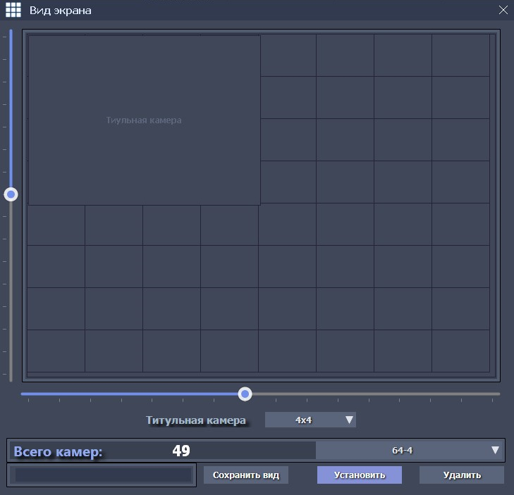

Форма «Вид экрана»
Форма «Вид экрана»
Эта форма вызывается из главного меню («Экран») и предназначена для выбора одного из видов рабочего экрана программы, а также для создания и сохранения нового экранного представления (вида).

Программа iDLook, по умолчанию, уже содержит несколько предопределенных экранных видов, список которых может быть дополнен новыми видами. Любой из сохраненных видов может быть выбран из выпадающего списка (в нижней правой части формы) и установлен в качестве текущего вида рабочего экрана (кнопка «Установить») или, при необходимости, удален (кнопка «Удалить»). Для создания новых видов используются вертикальный и горизонтальный слайдеры на форме, с помощью которых создается экранная «сетка», для отображения камер. Кроме отображений камер стандартных размеров, на сетке может располагаться и так называемая титульная камера (обычно это панорамная камера или наиболее важная камера на объекте видеонаблюдения). Титульная камера, для привлечения внимания, обладает увеличенным размером, который можно выбрать выпадающего списка.
Общее количество камер на экране (с учетом титульной камеры) отображается в поле «Всего камер». Созданный новый вид экрана, может быть сохранен после ввода его названия и нажатия на кнопку «Сохранить вид». После сохранения, новый вид появится в выпадающем списке сохраненных видов и может быть установлен в качестве текущего вида рабочего экрана.